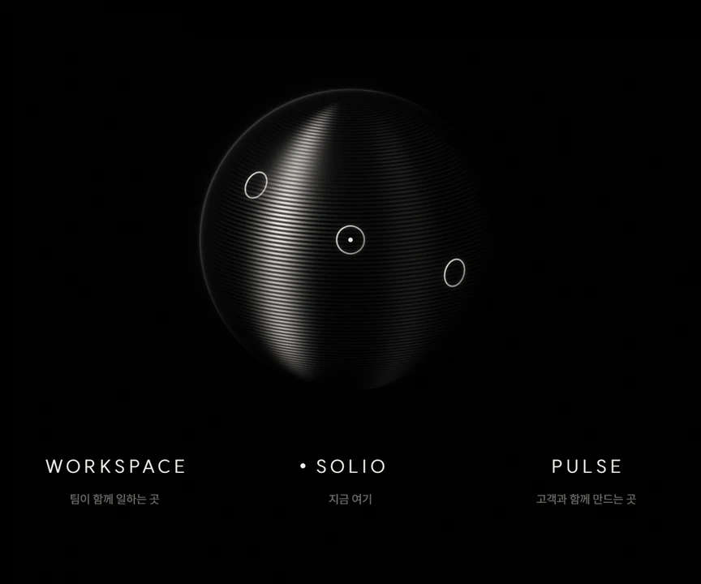
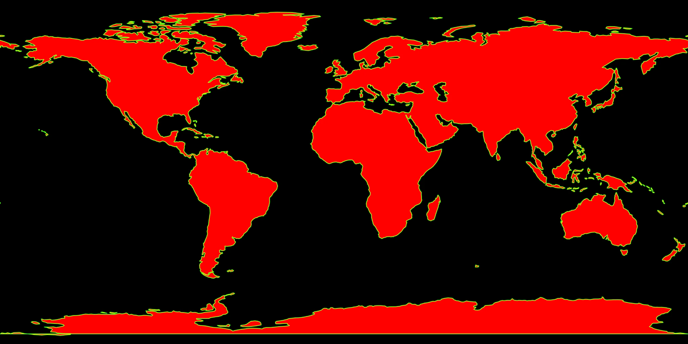

SYNK PC 클라이언트 · 공간 지도 다시 그린 판
공간 지도,세계 지도로.
구 위의 고리를 없앴습니다. 구는 지구가 되고, 공간은 지구 위의 도시 하나씩입니다. 이름에 손을 올리면 그 도시가 밝아지고, 누르면 그곳으로 들어갑니다.
SOLIO
이 공간에 들어왔습니다.
이 브라우저에서는 지구를 그리지 못합니다. 크롬이나 엣지에서 열어 주세요.
그리는 법
지금의 지도와 나란히

작게 볼 때
구에 다가가 지도가 켜질 때의 크기(200)와 그보다 작은 크기(120)입니다. 왼쪽 위에 쉬고 있는 작은 구(32)에는 지도를 그리지 않고 지금처럼 눈만 둡니다.
바꾼 것
- 고리와 구멍이 없습니다. 공간은 꽉 찬 작은 점 하나이고, 지금 있는 곳만 조금 크고 밝습니다.
- 이름은 구 아래가 아니라 지구 옆에 놓고, 도시에서 가는 선 하나로 잇습니다. 지도의 설명 줄과 같습니다.
- 지구는 거의 움직이지 않습니다. 이름에 손을 올리면 그 도시 쪽으로 조금만 돌아옵니다.
- 공간을 어느 도시에 둘지는 예시입니다. 세 곳을 아시아 한쪽에 모아, 고를 때 지구가 크게 돌지 않게 했습니다.
- 세계 지도는 누구나 쓸 수 있는 공개 자료(Natural Earth)로 그렸습니다.
